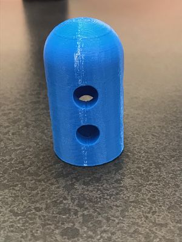
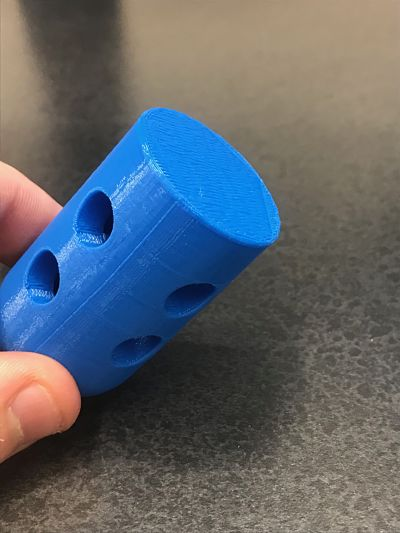

Home
Rotation 5
3D Printing and Scanning
This rotation we began working with 3D priting and scanning. The first project (shown below) is a model of my head placed upon a pedestal. Someone scanned my head
using a device with an Xbox Kinect on it. I then moved the file to my computer and began what would be a tedious learning process. Meshmixer was, by no means, an
that I pulled off of thingiverse.


The next project was to created an object that could be 3D printing additively but not subtractively. In other words, make a hollow object, because it is impossible to carve
an object out of something if the object is hollow. The design process was not very hard, as I already have had experience using Fusion 360. However, I did run into some issues when
when trying to print because I had the wrong type of file at first. The final project is shown below
 
hr
The final project to work on was a drip for a water bottle to screw into. My first print was a hair too small and did not fit the bottle, however, it did drip nicely. My next
attempt was to make it a little bigger. Some limitations of the 3D printer are that they do not precisely print what I need. For example, they print small holes poorly.